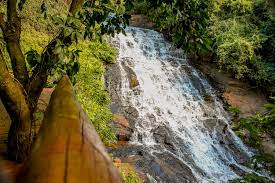
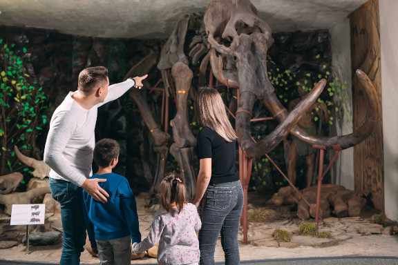
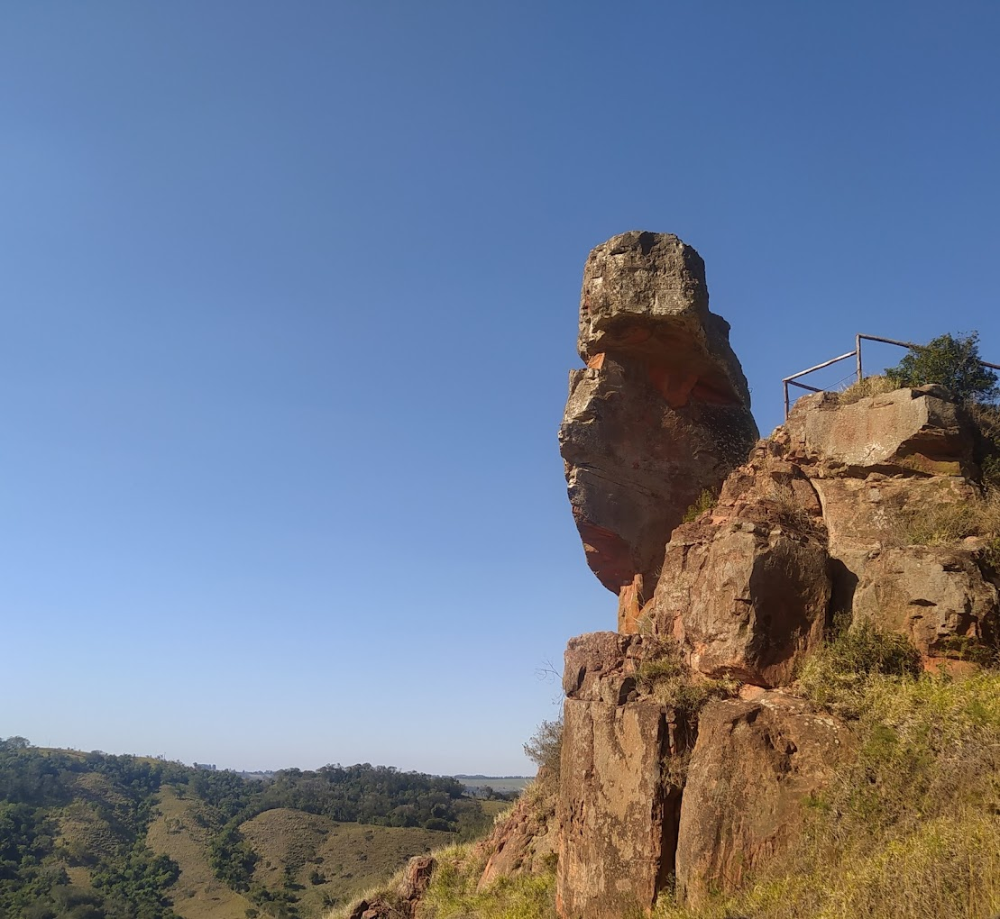
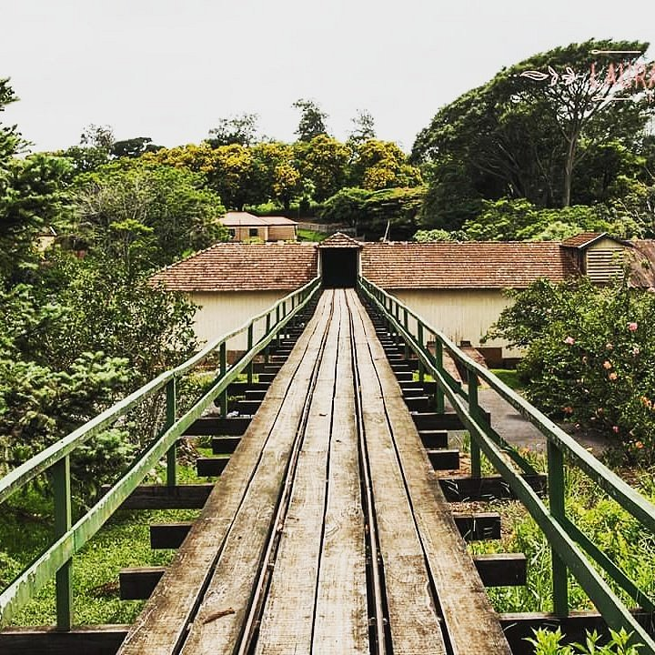

Locais para visitar próximo ao Morro do Gavião
- Cascata do Gavião - Uma linda cachoeira perfeita para fotos.

- Museu Histórico do Município de Ribeirão Claro - Conheça a história da região com exposições e eventos.

- Estância Pedra do Índio - Trilhas, grutas, rapel, além de um forte ponto de encontro para aventureiros.

- Fazenda Monte Bello - Fazenda fundada no início do século XX.
